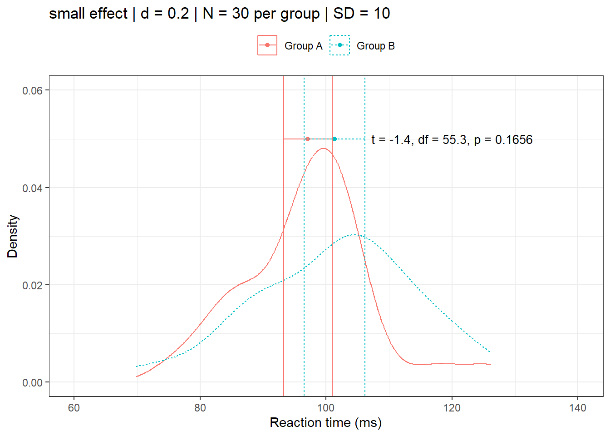
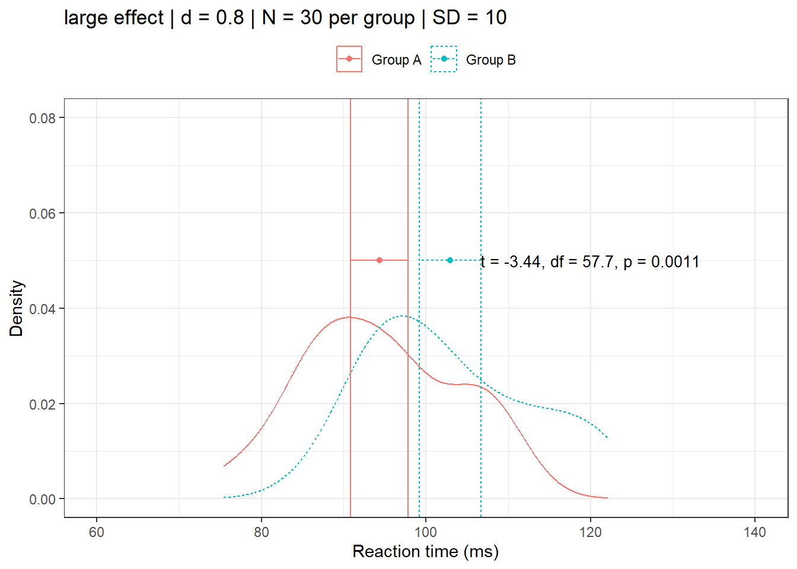
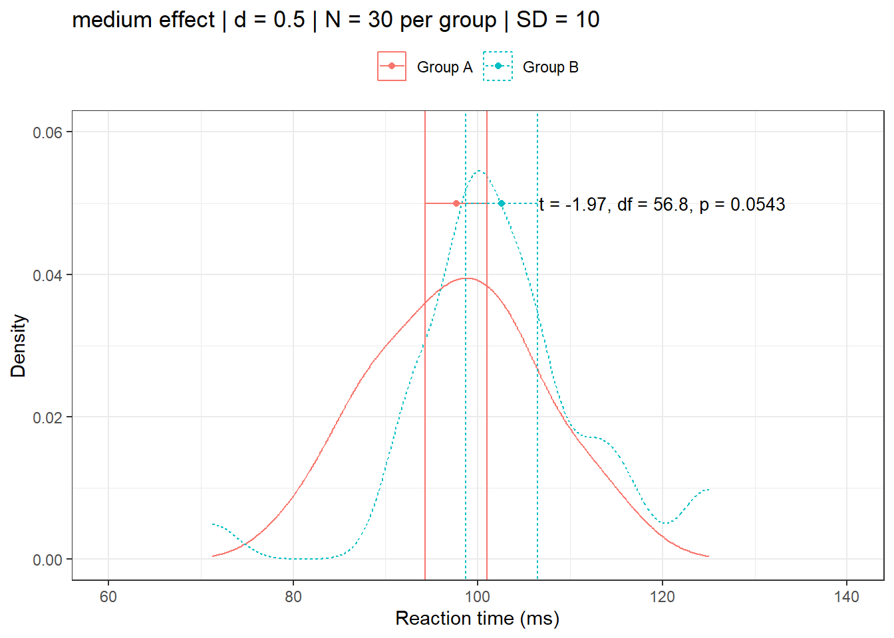
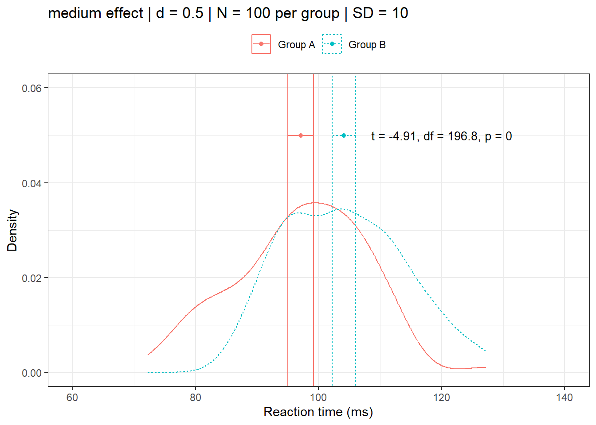
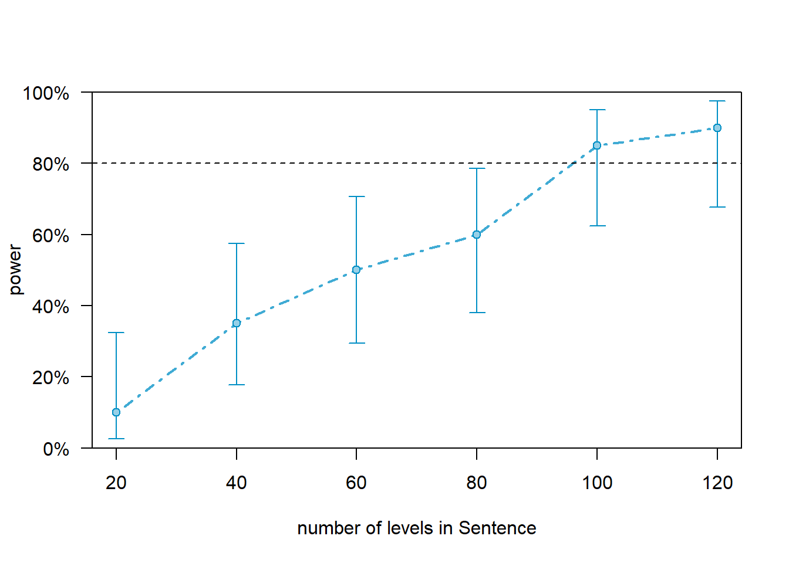
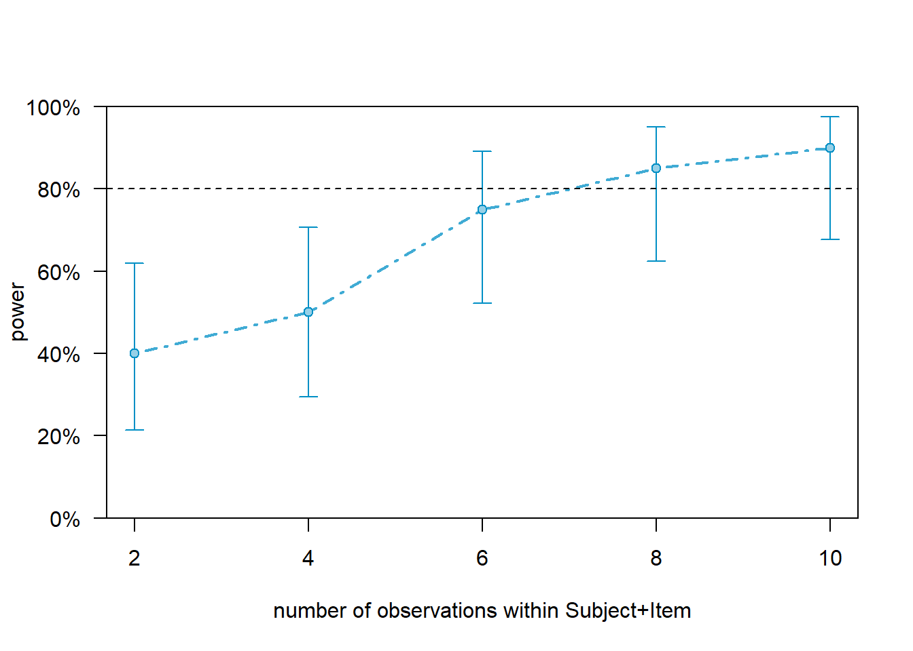

Power Analysis in R
This tutorial introduces statistical power analysis in R using the pwr package, covering sample size determination, power calculations for common statistical tests, effect size estimation, and post-hoc power analysis. It is aimed at researchers in linguistics and the humanities who want to design adequately powered studies or evaluate the statistical sensitivity of completed research.

Introduction

This tutorial introduces power analysis in R — a method for determining whether a study design is capable of detecting a real effect, and if so, with what probability. Power analysis is used both before data collection (to determine the sample size needed) and after data collection (to evaluate whether a null result may reflect insufficient statistical power rather than a genuine absence of effect).
The tutorial covers power analysis for common statistical tests using the pwr package (Champely 2020), for mixed-effects models using the simr package (Green and MacLeod 2016a), and for a broader range of designs using the WebPower package. It draws on examples from psycholinguistics (reaction time experiments), sociolinguistics (survey studies), and the mixed-effects modelling context introduced in the original LADAL regression tutorial. A worked end-to-end example in the style of a pre-registration — justifying the significance threshold, estimating the expected effect size, determining the required sample size, and reporting the results — concludes the tutorial.
A list of highly recommended papers discussing effect sizes and power analyses in linguistic research can be found here. The present tutorial draws on Green and MacLeod (2016b), Brysbaert and Stevens (2018), Arnold et al. (2011), and Johnson et al. (2015) as key references.
Prerequisite Tutorials
Before working through this tutorial, we suggest you familiarise yourself with:
- Getting Started with R — R objects, basic syntax, RStudio orientation
- Basic Inferential Statistics in R — t-tests, chi-square, ANOVA
- Mixed-Effects Regression in R — lmer and glmer modelling
Learning Objectives
By the end of this tutorial you will be able to:
- Explain what statistical power is and what determines it
- Distinguish between a priori, sensitivity, and post-hoc power analysis
- Interpret and convert between common effect size measures (Cohen’s d, f, w, f², odds ratio)
- Perform power analyses for t-tests, chi-square tests, ANOVA, and GLMs using the
pwrpackage - Perform power analyses for a wider range of designs using the
WebPowerpackage - Conduct simulation-based power analysis for mixed-effects models using
simr - Generate and interpret power curves to determine the minimum adequate sample size
- Write a pre-registration-style power analysis justification
Citation
Martin Schweinberger. 2026. Power Analysis in R. The Language Technology and Data Analysis Laboratory (LADAL), The University of Queensland, Australia. url: https://ladal.edu.au/tutorials/power_analysis/power_analysis.html (Version 3.1.1). doi: 10.5281/zenodo.19332933.
What Is Statistical Power?
Section Overview
What you will learn: The definition of statistical power and Type I/II errors; why power matters for the replicability of linguistic research; the three factors that jointly determine power (effect size, sample size, variability); and key findings from large-scale power analyses in psychology and linguistics
The Four Outcomes of a Hypothesis Test
Every statistical test can have one of four outcomes, depending on whether the null hypothesis (\(H_0\)) is true or false and whether the test rejects it or not:
| \(H_0\) is true | \(H_0\) is false | |
|---|---|---|
| Reject \(H_0\) | Type I error (false positive, rate = \(\alpha\)) | Correct rejection (power = \(1 - \beta\)) |
| Fail to reject \(H_0\) | Correct retention (rate = \(1 - \alpha\)) | Type II error (false negative, rate = \(\beta\)) |
Statistical power (\(1 - \beta\)) is the probability of correctly rejecting a false null hypothesis — in other words, the probability that a study finds a real effect when one truly exists. By convention, a power of at least 0.80 (80%) is considered the minimum acceptable standard for most research contexts (Cohen 1988; Field et al. 2007): this means a 20% chance of missing a real effect.
The significance level \(\alpha\) is the tolerated Type I error rate — typically set at 0.05 (5%). \(\alpha\) and power trade off: lowering \(\alpha\) (e.g. to 0.01) makes it harder to reject \(H_0\) and therefore reduces power unless the sample size is increased.
What Determines Power?
Three factors jointly determine the power of a study:
Effect size is the magnitude of the phenomenon being studied — the distance between population means, the strength of a correlation, or the size of a group difference. Larger effects are easier to detect. Effect size is the one factor researchers typically have the least control over: it is a property of the phenomenon, not the design.
Sample size (or the number of observations) is the most direct lever researchers have. More observations reduce sampling variability and make it easier to distinguish a real effect from noise. In designs with both participants and items (as in most psycholinguistics and corpus-based experiments), both the number of participants and the number of items contribute to power.
Variability in the data (captured by the standard deviation or residual variance) competes with the signal. Lower variability makes effects easier to detect. Repeated-measures and mixed-effects designs reduce effective variability by accounting for between-participant and between-item differences.
The relationship between these factors is formalized differently for each test type, but the intuition is always the same:
\[\text{Power} = f\!\left(\frac{\text{Effect size} \times \sqrt{N}}{\text{Variability}}\right)\]
Power in Linguistic Research
Brysbaert and Stevens (2018) conducted a large-scale simulation study of the power of experiments in experimental psychology and psycholinguistics and reached the following key conclusions:
- In experiments with repeated measures per participant per condition, replicable results can sometimes be achieved with as few as 20 participants — if each participant contributes enough observations.
- A ballpark figure of 1,600 observations per condition (e.g., 40 participants × 40 stimuli) is recommended for reaction time experiments starting a new line of research where the expected effect size is unknown.
- Standardised effect sizes (e.g., Cohen’s d) computed over participants depend on the number of stimuli presented. This has direct implications for replication studies and meta-analyses.
These findings highlight that linguistic research, like psychology, has historically been underpowered — a major contributor to the replication crisis.
A Priori, Sensitivity, and Post-Hoc Power Analysis
Power analysis can be used in three distinct modes:
A priori power analysis (the most common and most valuable) determines the sample size needed to achieve a target power (e.g., 0.80) given an assumed effect size and significance level. This is the pre-study planning tool.
Sensitivity analysis determines the minimum detectable effect size given a fixed sample size, significance level, and target power. This is useful when the sample size is constrained (e.g., a rare clinical population) and the researcher needs to know what effect magnitudes the study can realistically detect.
Post-hoc power analysis — sometimes called observed power — estimates power based on the observed effect size from the data just collected. This approach is widely considered misleading (Hoenig and Heisey 2001; Perugini, Gallucci, and Costantini 2018) because the observed effect size is itself an unreliable estimate, particularly in small samples. It should be treated with extreme caution and is not a valid defence of a non-significant result.
Post-Hoc Power Is Not a Valid Diagnostic
A non-significant result does not become meaningful simply because a post-hoc power calculation returns low power — this is circular reasoning. The appropriate response to a non-significant result is either (a) to increase the sample size before re-testing, or (b) to report a confidence interval or equivalence test to bound the effect size.
Exercises: Statistical Power Concepts
Q1. A study has 80% power to detect a medium effect. If the true effect in the population is small (not medium), what happens to the actual power of the study?
Q2. Which of the following best describes a sensitivity analysis?
Effect Size Measures
Section Overview
What you will learn: The most commonly used effect size measures in linguistic research — Cohen’s d, Cohen’s f, Cohen’s w, f², and the odds ratio; their conventional small/medium/large thresholds; how to convert between them; and which measure is appropriate for which test
Why Effect Sizes Matter
Effect sizes are standardised, scale-free measures of the magnitude of a relationship or difference. They serve two purposes: (1) they allow meaningful comparison across studies with different measurement scales, and (2) they provide the input to power calculations. Reporting effect sizes alongside p-values is now a formal requirement in most linguistics and psychology journals (Gries 2005).
Language Is Never Random
Kilgarriff (2005) made the pointed observation that language is never, ever, ever, random. In sufficiently large corpora, even trivially small differences between conditions will yield statistically significant results — because with enough data, the null hypothesis of randomness is always false. This is why effect size rather than p-value is the appropriate metric for deciding whether a result is meaningful, not merely detectable. Always report both.
Cohen’s d
Cohen’s d is used for comparing two means (t-tests). It expresses the difference between means in units of standard deviations:
\[d = \frac{\mu_1 - \mu_2}{\sigma_{\text{pooled}}}\]
Conventional benchmarks (Cohen 1988): small \(d \geq 0.2\), medium \(d \geq 0.5\), large \(d \geq 0.8\).
In psycholinguistic reaction time (RT) experiments, for example, a condition difference of 30 ms with a within-participant SD of 120 ms corresponds to \(d = 30/120 = 0.25\) — a small effect.
Cohen’s f
Cohen’s f is used for one-way ANOVA and related designs. It is the ratio of the standard deviation of group means to the within-group standard deviation:
\[f = \frac{\sigma_{\text{means}}}{\sigma_{\text{within}}}\]
Conventional benchmarks: small \(f \geq 0.1\), medium \(f \geq 0.25\), large \(f \geq 0.4\).
Cohen’s w
Cohen’s w is used for chi-square tests of independence and goodness of fit:
\[w = \sqrt{\sum_{i} \frac{(P_{1i} - P_{0i})^2}{P_{0i}}}\]
Conventional benchmarks: small \(w \geq 0.1\), medium \(w \geq 0.3\), large \(w \geq 0.5\).
f² (Cohen’s f-squared)
f² is used for linear regression and GLMs. It is derived from \(R^2\):
\[f^2 = \frac{R^2}{1 - R^2}\]
Conventional benchmarks: small \(f^2 \geq 0.02\), medium \(f^2 \geq 0.15\), large \(f^2 \geq 0.35\).
Odds Ratio
The odds ratio (OR) is the natural effect size for logistic regression and chi-square tests on binary outcomes. It expresses how much more likely outcome A is relative to outcome B across two groups. The correspondence with Cohen’s d (Chen, Cohen, and Chen 2010; Cohen 1988) is approximate:
| Denomination | Cohen’s d | Odds Ratio |
|---|---|---|
| Small | 0.2 | 1.68 |
| Medium | 0.5 | 3.47 |
| Large | 0.8 | 6.71 |
Converting Between Effect Sizes in R
The effectsize package provides convenient conversion functions:
Code
library(effectsize)
# Cohen's d → odds ratio
d_to_oddsratio(0.2) # small[1] 1.437Code
d_to_oddsratio(0.5) # medium[1] 2.477Code
d_to_oddsratio(0.8) # large[1] 4.268Code
# odds ratio → Cohen's d
oddsratio_to_d(1.68)[1] 0.286Code
# r → d
r_to_d(0.1)[1] 0.201Code
r_to_d(0.3)[1] 0.629Extracting Effect Sizes from Tests
The effectsize package can extract effect sizes directly from test objects:
Code
# generate two RT-style vectors: control vs. primed condition
set.seed(2026)
rt_control <- rnorm(40, mean = 620, sd = 120)
rt_primed <- rnorm(40, mean = 580, sd = 120)
tt <- t.test(rt_control, rt_primed)
effectsize::cohens_d(rt_control, rt_primed)Cohen's d | 95% CI
-------------------------
0.44 | [ 0.00, 0.88]
- Estimated using pooled SD.
Exercises: Effect Size Measures
Q3. A sociolinguistic survey finds that 60% of Group A and 50% of Group B use a particular variant. Is this likely to correspond to a small, medium, or large effect (Cohen’s w)?
Q4. A researcher uses effectsize::cohens_d() and obtains d = 0.45. What does this mean, and which conventional size category does it fall into?
Setup
Installing Packages
Code
# Run once — comment out after installation
install.packages(c("tidyverse", "pwr", "WebPower", "lme4",
"sjPlot", "simr", "effectsize", "DT",
"DescTools", "checkdown", "flextable"))Loading Packages
Code
library(tidyverse)
library(pwr)
library(WebPower)
library(lme4)
library(sjPlot)
library(simr)
library(effectsize)
library(flextable)
library(checkdown)What Determines Whether You Find an Effect?
Section Overview
What you will learn: A visual and intuitive exploration of how effect size, sample size, and variability each independently influence whether a statistical test can detect a real effect
To build intuition before running formal power calculations, we simulate distributions and compare them under varying conditions. The helper function below generates two samples and plots their distributions alongside t-test results:
Code
distplot <- function(mean1, mean2, sd1, n,
pop = "two different populations",
d = 0, effect = "no",
ylim = 0.06, seed = 123) {
require(tidyverse)
require(DescTools)
set.seed(seed)
dat <- data.frame(
time = c(rnorm(n, mean1, sd1), rnorm(n, mean2, sd1)),
group = rep(c("Group A", "Group B"), each = n)
) |>
dplyr::group_by(group) |>
dplyr::mutate(
mean = mean(time),
cil = DescTools::MeanCI(time, conf.level = 0.95)[2],
ciu = DescTools::MeanCI(time, conf.level = 0.95)[3]
) |>
dplyr::ungroup()
ttest <- t.test(time ~ group, data = dat)
label <- paste0("t = ", round(ttest$statistic, 2),
", df = ", round(ttest$parameter, 1),
", p = ", round(ttest$p.value, 4))
ggplot(dat, aes(x = time, colour = group, linetype = group)) +
geom_density(alpha = 0.8) +
geom_point(aes(x = mean, y = 0.05)) +
geom_errorbarh(aes(xmin = cil, xmax = ciu, y = 0.05, height = 0.005)) +
annotate("text", x = 120, y = 0.05, label = label, size = 3.5) +
coord_cartesian(xlim = c(60, 140), ylim = c(0, ylim)) +
labs(
title = paste0(effect, " effect | d = ", d,
" | N = ", n, " per group | SD = ", sd1),
x = "Reaction time (ms)", y = "Density", colour = NULL, linetype = NULL
) +
theme_bw() +
theme(legend.position = "top")
}Effect Size
We hold sample size (N = 30 per group) and variability (SD = 10) constant and vary the effect:
Code
distplot(mean1 = 100, mean2 = 100, sd1 = 10, n = 30,
pop = "the same population", d = 0, effect = "none", seed = 123)
Code
distplot(mean1 = 99, mean2 = 101, sd1 = 10, n = 30,
d = .2, effect = "small", seed = 111)
Code
distplot(mean1 = 97.5, mean2 = 102.5, sd1 = 10, n = 30,
d = 0.5, effect = "medium", seed = 222)
Code
distplot(mean1 = 96, mean2 = 104, sd1 = 10, n = 30,
d = 0.8, effect = "large", seed = 444, ylim = 0.08)
Key insight: If variability and sample size remain constant, larger effects are easier to detect.
Sample Size
We hold the effect (d = 0.5) and variability (SD = 10) constant and vary N:
Code
distplot(mean1 = 97.5, mean2 = 102.5, sd1 = 10, n = 30,
d = 0.5, effect = "medium", seed = 555)
Code
distplot(mean1 = 97.5, mean2 = 102.5, sd1 = 10, n = 100,
d = 0.5, effect = "medium", seed = 888)
Key insight: If variability and effect size remain constant, larger samples increase power.
Variability
We hold the effect (d = 0.5) and N constant and vary the standard deviation:
Code
distplot(mean1 = 97.5, mean2 = 102.5, sd1 = 10, n = 30,
d = 0.5, effect = "medium", seed = 888)
Code
distplot(mean1 = 97.5, mean2 = 102.5, sd1 = 5, n = 30,
d = 0.5, effect = "medium", ylim = 0.125, seed = 999)
Key insight: If sample size and effect size remain constant, lower variability increases power.
Basic Power Analysis with pwr
Section Overview
What you will learn: How to use the pwr package to perform a priori power analysis and sensitivity analysis for the most common statistical tests used in linguistics: one-way ANOVA, general linear models, paired and independent t-tests, and chi-square tests
The pwr package (Champely 2020) implements the analytical power formulas from Cohen (1988). Each function takes three of the four parameters (effect size, sample size, significance level, power) and solves for the fourth. The functions covered here are:
| Test | Function | Effect size |
|---|---|---|
| One-way ANOVA | pwr.anova.test() |
Cohen’s f |
| General linear model | pwr.f2.test() |
Cohen’s f² |
| Paired t-test | pwr.t.test() |
Cohen’s d |
| Two-sample t-test (unequal N) | pwr.t2n.test() |
Cohen’s d |
| Chi-square test | pwr.chisq.test() |
Cohen’s w |
One-Way ANOVA
Scenario: A sociolinguistic survey compares attitudes toward a language variety across 5 regional groups. We expect a moderate effect (f = 0.25), use \(\alpha\) = 0.05, and target 80% power.
Code
library(pwr)
# A priori: how many participants per group?
pwr.anova.test(
k = 5, # number of groups
f = 0.25, # moderate effect
sig.level = 0.05,
power = 0.80
)
Balanced one-way analysis of variance power calculation
k = 5
n = 39.15
f = 0.25
sig.level = 0.05
power = 0.8
NOTE: n is number in each groupThe minimum sample size is 40 participants per group (200 total). If we could only recruit 30 per group, the power would be:
Code
# Sensitivity check: power with N = 30 per group
pwr.anova.test(k = 5, f = 0.25, sig.level = 0.05, n = 30)
Balanced one-way analysis of variance power calculation
k = 5
n = 30
f = 0.25
sig.level = 0.05
power = 0.6676
NOTE: n is number in each groupWith 30 per group, power drops to about 67% — insufficient by convention.
Sensitivity analysis: What is the smallest f detectable with 30 per group at 80% power?
Code
pwr.anova.test(k = 5, n = 30, sig.level = 0.05, power = 0.80)
Balanced one-way analysis of variance power calculation
k = 5
n = 30
f = 0.2867
sig.level = 0.05
power = 0.8
NOTE: n is number in each groupWith 30 per group, only effects of f ≥ 0.30 (between moderate and large) can be reliably detected.
General Linear Model (GLM/Regression)
Scenario: A regression model with 2 predictors is fit to data from 60 participants (\(df_{\text{numerator}}\) = 2, \(df_{\text{denominator}}\) = 57). We want to know the power for detecting a small effect (f² = 0.02).
Code
pwr.f2.test(
u = 2, # df numerator
v = 57, # df denominator
f2 = 0.02, # small effect
sig.level = 0.05
)
Multiple regression power calculation
u = 2
v = 57
f2 = 0.02
sig.level = 0.05
power = 0.1452Power is only about 17% — dramatically underpowered for a small effect.
Paired t-Test
Scenario (psycholinguistics): A priming study measures RT before and after a priming manipulation in 30 participants. We expect a small RT advantage of about 25 ms (SD ≈ 125 ms, giving d ≈ 0.2).
Code
pwr.t.test(
d = 0.2,
n = 30,
sig.level = 0.05,
type = "paired",
alternative = "two.sided"
)
Paired t test power calculation
n = 30
d = 0.2
sig.level = 0.05
power = 0.1852
alternative = two.sided
NOTE: n is number of *pairs*Power is only about 17% for a small effect with 30 participants. How many do we need?
Code
pwr.t.test(
d = 0.2,
power = 0.80,
sig.level = 0.05,
type = "paired",
alternative = "two.sided"
)
Paired t test power calculation
n = 198.2
d = 0.2
sig.level = 0.05
power = 0.8
alternative = two.sided
NOTE: n is number of *pairs*We need 199 participants to reliably detect a small priming effect of d = 0.2.
Independent Samples t-Test
Scenario (sociolinguistics): A survey compares the frequency of a pragmatic marker between two speaker groups: 35 younger speakers and 25 older speakers. The hypothesis is directional (the marker is more frequent among younger speakers), corresponding to a one-tailed test.
Code
pwr.t2n.test(
d = 0.2,
n1 = 35,
n2 = 25,
sig.level = 0.05,
alternative = "greater"
)
t test power calculation
n1 = 35
n2 = 25
d = 0.2
sig.level = 0.05
power = 0.1867
alternative = greaterPower is around 18% — far too low to trust a null result.
Chi-Square Test
Scenario (corpus linguistics): A 2×2 contingency table tests whether word order (SOV vs. SVO) differs between two registers. We use a small effect (w = 0.2) with \(\alpha\) = 0.05.
Code
pwr.chisq.test(
w = 0.2,
N = 100, # total observations
df = 1,
sig.level = 0.05
)
Chi squared power calculation
w = 0.2
N = 100
df = 1
sig.level = 0.05
power = 0.516
NOTE: N is the number of observationsPower is about 29% with 100 observations. What total N would yield 80% power?
Code
pwr.chisq.test(
w = 0.2,
power = 0.80,
df = 1,
sig.level = 0.05
)
Chi squared power calculation
w = 0.2
N = 196.2
df = 1
sig.level = 0.05
power = 0.8
NOTE: N is the number of observationsWe need 197 total observations to reliably detect a small corpus frequency difference.
Exercises: Basic Power Analysis
Q5. A researcher plans a paired t-test with 50 participants to detect a medium effect (d = 0.5, two-tailed, \(\alpha\) = 0.05). What is the expected power?
Q6. A corpus study finds a statistically significant chi-square result (p = 0.03) with a total of 5,000 observations. A colleague argues this means the finding is linguistically important. What is the most important additional check?
Power Analysis with WebPower
Section Overview
What you will learn: How to use the WebPower package for power analysis of designs not covered by pwr, including one-sample and two-sample proportion tests, mediation analysis, and multilevel/repeated-measures designs commonly used in psycholinguistics and sociolinguistics
The WebPower package (Zhang et al. 2018) provides power analysis for a wider range of designs and is particularly useful for repeated-measures ANOVA and proportion tests that appear frequently in survey-based sociolinguistic research.
Two-Proportion Z-Test
Scenario: A sociolinguistic survey tests whether the proportion of speakers using a particular feature differs between two communities (60% vs. 50%). We plan to recruit 150 speakers per community.
Note
wp.prop() uses Cohen’s h as its effect size — not raw proportions. Cohen’s h is computed from two proportions using pwr::ES.h(p1, p2). Always convert first.
Code
library(WebPower)
# wp.prop() uses Cohen's h as its effect size, not raw proportions.
# Convert p1 = 0.60 and p2 = 0.50 to h using ES.h() from the pwr package:
h_60_50 <- pwr::ES.h(0.60, 0.50)
h_60_50[1] 0.2014Code
wp.prop(
h = h_60_50,
n1 = 150,
n2 = 150,
alpha = 0.05,
alternative = "two.sided",
type = "2p"
)Power for two-sample proportion (equal n)
h n alpha power
0.2014 150 0.05 0.4145
NOTE: Sample sizes for EACH group
URL: http://psychstat.org/prop2pWith 150 per community, we have modest power to detect this 10-percentage-point difference. Let’s find the required N:
Code
wp.prop(
h = h_60_50,
n1 = NULL, # to be solved
alpha = 0.05,
power = 0.80,
alternative = "two.sided",
type = "2p"
)Power for two-sample proportion (equal n)
h n alpha power
0.2014 387.2 0.05 0.8
NOTE: Sample sizes for EACH group
URL: http://psychstat.org/prop2pRepeated-Measures ANOVA
Scenario (psycholinguistics): A within-subjects reading time experiment has 3 conditions. We assume a medium effect (f = 0.25), \(\alpha\) = 0.05, and estimate the correlation between repeated measures as 0.5.
Code
wp.rmanova(
n = NULL, # to be solved
ng = 3, # number of groups/conditions
nm = 3, # number of measurements per participant
f = 0.25,
nscor = 0.5, # sphericity correction (Greenhouse-Geisser)
alpha = 0.05,
power = 0.80
)Repeated-measures ANOVA analysis
n f ng nm nscor alpha power
311.3 0.25 3 3 0.5 0.05 0.8
NOTE: Power analysis for between-effect test
URL: http://psychstat.org/rmanovaMediation Analysis
Scenario: A study tests whether social network integration mediates the relationship between dialect contact and phonological accommodation. We expect path coefficients a = 0.3 and b = 0.3.
Code
wp.mediation(
n = NULL,
a = 0.3,
b = 0.3,
varx = 1,
vary = 1,
alpha = 0.05,
power = 0.80
)Power for simple mediation
n power a b varx varm vary alpha
175.2 0.8 0.3 0.3 1 1 1 0.05
URL: http://psychstat.org/mediation
Exercises: WebPower
Q7. Two dialect surveys recorded feature use as follows: Region A: 45%, Region B: 35%. Using wp.prop(), approximately how many speakers per region are needed to detect this difference with 80% power (\(\alpha\) = 0.05, two-tailed)?
Q8. In a repeated-measures design, why is power typically higher than in an equivalent between-subjects design with the same number of participants?
Advanced Power Analysis with simr
Section Overview
What you will learn: How to conduct simulation-based power analysis for linear mixed-effects models (lmer) and generalised linear mixed-effects models (glmer) using the simr package; how to extend a pilot model to larger samples and plot power curves; and how to test power for fixed effects and interactions
Simulation-based power analysis is essential for mixed-effects models because no closed-form analytical power formula exists for designs with crossed random effects. simr (Green and MacLeod 2016a) works by: (1) defining a model with specified fixed and random effects, (2) simulating many datasets from that model, and (3) fitting the model to each simulated dataset and recording how often the target effect is significant.
Using Piloted Data and lmer
We load piloted data from a psycholinguistic experiment that recorded which characters appeared in scenes of a play (serving here as a proxy for participant-by-item designs). The data contains Group, SentenceType, and WordOrder as predictors with participants (ID) and items (Sentence) as crossed random effects.
Code
regdat <- base::readRDS("tutorials/power_analysis/data/regdat.rda", "rb")
head(regdat, 8) ID Sentence Group WordOrder SentenceType
1 Part01 Sentence01 L1English V2 NoAdverbial
2 Part01 Sentence02 L1English V3 NoAdverbial
3 Part01 Sentence03 L1English V3 NoAdverbial
4 Part01 Sentence04 L1English V2 NoAdverbial
5 Part01 Sentence05 L1English V2 NoAdverbial
6 Part01 Sentence06 L1English V3 NoAdverbial
7 Part01 Sentence07 L1English V2 NoAdverbial
8 Part01 Sentence08 L1English V3 NoAdverbialCode
str(regdat)'data.frame': 480 obs. of 5 variables:
$ ID : Factor w/ 20 levels "Part01","Part02",..: 1 1 1 1 1 1 1 1 1 1 ...
$ Sentence : Factor w/ 24 levels "Sentence01","Sentence02",..: 1 2 3 4 5 6 7 8 9 10 ...
$ Group : Factor w/ 2 levels "L1English","L2English": 1 1 1 1 1 1 1 1 1 1 ...
$ WordOrder : Factor w/ 2 levels "V2","V3": 1 2 2 1 1 2 1 2 2 1 ...
$ SentenceType: Factor w/ 2 levels "NoAdverbial",..: 1 1 1 1 1 1 1 1 1 1 ...Code
# check design balance
table(regdat$Group, regdat$WordOrder)
V2 V3
L1English 120 120
L2English 120 120Code
table(regdat$Group, regdat$SentenceType)
NoAdverbial SentenceAdverbial
L1English 120 120
L2English 120 120Setting Model Parameters
We specify effect sizes for fixed effects and variances for random effects. The fixed effects are set to 0.52 — we verify below that this corresponds to a small-to-medium effect (OR ≈ 1.68, Cohen’s d ≈ 0.2):
Code
fixed <- c(.52, .52, .52, .52, .52) # intercept + 4 slopes
rand <- list(0.5, 0.1) # random intercept variances for Sentence and ID
res <- 2 # residual SDCode
# verify: exp(0.52) is the odds ratio
exp(0.52)[1] 1.682Code
# corresponds to a small effect:
oddsratio_to_d(exp(0.52))[1] 0.2867Fitting the Simulated Model
Code
m1 <- makeLmer(
y ~ (1 | Sentence) + (1 | ID) + Group * SentenceType + WordOrder,
fixef = fixed,
VarCorr = rand,
sigma = res,
data = regdat
)
sjPlot::tab_model(m1)| y | |||
|---|---|---|---|
| Predictors | Estimates | CI | p |
| (Intercept) | 0.52 | -0.14 – 1.18 | 0.124 |
| Group [L2English] | 0.52 | -0.06 – 1.10 | 0.078 |
| SentenceType [SentenceAdverbial] |
0.52 | -0.24 – 1.28 | 0.180 |
| WordOrder [V3] | 0.52 | -0.15 – 1.19 | 0.129 |
| Group [L2English] × SentenceType [SentenceAdverbial] |
0.52 | -0.20 – 1.24 | 0.155 |
| Random Effects | |||
| σ2 | 4.00 | ||
| τ00 Sentence | 0.50 | ||
| τ00 ID | 0.10 | ||
| ICC | 0.13 | ||
| N Sentence | 24 | ||
| N ID | 20 | ||
| Observations | 480 | ||
| Marginal R2 / Conditional R2 | 0.078 / 0.198 | ||
Note
The summary confirms that the parameter values are correctly specified, but none of the effects are significant yet — this is expected for a pilot dataset that is underpowered by design.
Power for a Main Effect
We test power for WordOrder using fcompare, which compares the full model to a model without that predictor:
Code
set.seed(2026)
sim_wo <- simr::powerSim(
m1,
nsim = 20,
test = fcompare(y ~ Group * SentenceType)
)Simulating: | |Simulating: |=== |Simulating: |====== |Simulating: |========= |Simulating: |============= |Simulating: |================ |Simulating: |=================== |Simulating: |======================= |Simulating: |========================== |Simulating: |============================= |Simulating: |================================= |Simulating: |==================================== |Simulating: |======================================= |Simulating: |========================================== |Simulating: |============================================== |Simulating: |================================================= |Simulating: |==================================================== |Simulating: |======================================================== |Simulating: |=========================================================== |Simulating: |============================================================== |Simulating: |==================================================================|Code
sim_woPower for model comparison, (95% confidence interval):
15.00% ( 3.21, 37.89)
Test: Likelihood ratio
Comparison to y ~ Group * SentenceType + [re]
Based on 20 simulations, (0 warnings, 0 errors)
alpha = 0.05, nrow = 480
Time elapsed: 0 h 0 m 2 s
Warning
We use only nsim = 20 here for speed. In practice, use at least 500–1,000 simulations for reliable estimates. With 20 simulations, the confidence intervals on power estimates are very wide.
Power for an Interaction
Code
set.seed(2026)
sim_gst <- simr::powerSim(
m1,
nsim = 20,
test = fcompare(y ~ WordOrder + Group + SentenceType)
)Simulating: | |Simulating: |=== |Simulating: |====== |Simulating: |========= |Simulating: |============= |Simulating: |================ |Simulating: |=================== |Simulating: |======================= |Simulating: |========================== |Simulating: |============================= |Simulating: |================================= |Simulating: |==================================== |Simulating: |======================================= |Simulating: |========================================== |Simulating: |============================================== |Simulating: |================================================= |Simulating: |==================================================== |Simulating: |======================================================== |Simulating: |=========================================================== |Simulating: |============================================================== |Simulating: |==================================================================|Code
sim_gstPower for model comparison, (95% confidence interval):
50.00% (27.20, 72.80)
Test: Likelihood ratio
Comparison to y ~ WordOrder + Group + SentenceType + [re]
Based on 20 simulations, (0 warnings, 0 errors)
alpha = 0.05, nrow = 480
Time elapsed: 0 h 0 m 2 sExtending the Design: Adding Items
Since power is insufficient, we extend the model to explore what sample size is needed. We first increase the number of sentences (items):
Code
m1_as <- simr::extend(m1, along = "Sentence", n = 120)Code
set.seed(2026)
sim_m1_as_gst <- powerSim(
m1_as, nsim = 20,
test = fcompare(y ~ WordOrder + Group + SentenceType)
)Simulating: | |Simulating: |=== |Simulating: |====== |Simulating: |========= |Simulating: |============= |Simulating: |================ |Simulating: |=================== |Simulating: |======================= |Simulating: |========================== |Simulating: |============================= |Simulating: |================================= |Simulating: |==================================== |Simulating: |======================================= |Simulating: |========================================== |Simulating: |============================================== |Simulating: |================================================= |Simulating: |==================================================== |Simulating: |======================================================== |Simulating: |=========================================================== |Simulating: |============================================================== |Simulating: |==================================================================|Code
sim_m1_as_gstPower for model comparison, (95% confidence interval):
90.00% (68.30, 98.77)
Test: Likelihood ratio
Comparison to y ~ WordOrder + Group + SentenceType + [re]
Based on 20 simulations, (0 warnings, 0 errors)
alpha = 0.05, nrow = 2400
Time elapsed: 0 h 0 m 4 sPower Curve over Items
Code
set.seed(2026)
pcurve_items <- simr::powerCurve(
m1_as,
test = fcompare(y ~ WordOrder + Group + SentenceType),
along = "Sentence",
nsim = 20,
breaks = seq(20, 120, 20)
)
plot(pcurve_items)
Extending the Design: Adding Participants
Code
m1_ap <- simr::extend(m1, along = "ID", n = 120)Code
set.seed(2026)
sim_m1_ap_gst <- powerSim(
m1_ap, nsim = 20,
test = fcompare(y ~ WordOrder + Group + SentenceType)
)Simulating: | |Simulating: |=== |Simulating: |====== |Simulating: |========= |Simulating: |============= |Simulating: |================ |Simulating: |=================== |Simulating: |======================= |Simulating: |========================== |Simulating: |============================= |Simulating: |================================= |Simulating: |==================================== |Simulating: |======================================= |Simulating: |========================================== |Simulating: |============================================== |Simulating: |================================================= |Simulating: |==================================================== |Simulating: |======================================================== |Simulating: |=========================================================== |Simulating: |============================================================== |Simulating: |==================================================================|Code
sim_m1_ap_gstPower for model comparison, (95% confidence interval):
95.00% (75.13, 99.87)
Test: Likelihood ratio
Comparison to y ~ WordOrder + Group + SentenceType + [re]
Based on 20 simulations, (0 warnings, 0 errors)
alpha = 0.05, nrow = 2880
Time elapsed: 0 h 0 m 4 sPower Curve over Participants
Code
set.seed(2026)
pcurve_pp <- simr::powerCurve(
m1_ap,
test = fcompare(y ~ Group + SentenceType + WordOrder),
along = "ID",
nsim = 20,
breaks = seq(20, 120, 20)
)
plot(pcurve_pp)
Simulation-Based Power for glmer
Scenario: A binary-outcome eye-tracking experiment (fixation: yes/no) with 10 participants, 10 items, and 2 conditions (Control vs. Test).
Code
set.seed(2026)
simdat <- data.frame(
Subject = rep(paste0("Sub", 1:10), each = 20),
Item = as.character(rep(1:10, 20)),
Condition = rep(c(rep("Control", 10), rep("Test", 10)), 10)
) |> dplyr::mutate_if(is.character, factor)
head(simdat, 12) Subject Item Condition
1 Sub1 1 Control
2 Sub1 2 Control
3 Sub1 3 Control
4 Sub1 4 Control
5 Sub1 5 Control
6 Sub1 6 Control
7 Sub1 7 Control
8 Sub1 8 Control
9 Sub1 9 Control
10 Sub1 10 Control
11 Sub1 1 Test
12 Sub1 2 TestCode
fixed_glm <- c(.52, .52)
rand_glm <- list(0.5, 0.1)
m2 <- simr::makeGlmer(
y ~ (1 | Subject) + (1 | Item) + Condition,
family = "binomial",
fixef = fixed_glm,
VarCorr = rand_glm,
data = simdat
)
sjPlot::tab_model(m2)| y | |||
|---|---|---|---|
| Predictors | Odds Ratios | CI | p |
| (Intercept) | 1.68 | 0.89 – 3.17 | 0.108 |
| Condition [Test] | 1.68 | 0.94 – 3.02 | 0.081 |
| Random Effects | |||
| σ2 | 3.29 | ||
| τ00 Subject | 0.50 | ||
| τ00 Item | 0.10 | ||
| ICC | 0.15 | ||
| N Subject | 10 | ||
| N Item | 10 | ||
| Observations | 200 | ||
| Marginal R2 / Conditional R2 | 0.017 / 0.169 | ||
Code
set.seed(2026)
rsim_m2_c <- powerSim(m2, fixed("ConditionTest", "z"), nsim = 20)Simulating: | |Simulating: |=== |Simulating: |====== |Simulating: |========= |Simulating: |============= |Simulating: |================ |Simulating: |=================== |Simulating: |======================= |Simulating: |========================== |Simulating: |============================= |Simulating: |================================= |Simulating: |==================================== |Simulating: |======================================= |Simulating: |========================================== |Simulating: |============================================== |Simulating: |================================================= |Simulating: |==================================================== |Simulating: |======================================================== |Simulating: |=========================================================== |Simulating: |============================================================== |Simulating: |==================================================================|Code
rsim_m2_cPower for predictor 'ConditionTest', (95% confidence interval):
45.00% (23.06, 68.47)
Test: z-test
Effect size for ConditionTest is 0.52
Based on 20 simulations, (0 warnings, 0 errors)
alpha = 0.05, nrow = 200
Time elapsed: 0 h 0 m 3 sExtending Items and Plotting the Curve
Code
m2_ai <- simr::extend(m2, along = "Item", n = 40)Code
set.seed(2026)
pcurve_m2_ai <- powerCurve(
m2_ai,
fixed("ConditionTest", "z"),
along = "Item",
nsim = 20,
breaks = seq(10, 40, 5)
)Simulating: | |Simulating: |=== |Simulating: |====== |Simulating: |========= |Simulating: |============= |Simulating: |================ |Simulating: |=================== |Simulating: |======================= |Simulating: |========================== |Simulating: |============================= |Simulating: |================================= |Simulating: |==================================== |Simulating: |======================================= |Simulating: |========================================== |Simulating: |============================================== |Simulating: |================================================= |Simulating: |==================================================== |Simulating: |======================================================== |Simulating: |=========================================================== |Simulating: |============================================================== |Simulating: |==================================================================|(1/7) (1/7) Simulating: | |(1/7) Simulating: |=== |(1/7) Simulating: |====== |(1/7) Simulating: |========= |(1/7) Simulating: |============ |(1/7) Simulating: |=============== |(1/7) Simulating: |================== |(1/7) Simulating: |===================== |(1/7) Simulating: |======================== |(1/7) Simulating: |=========================== |(1/7) Simulating: |============================== |(1/7) Simulating: |================================= |(1/7) Simulating: |==================================== |(1/7) Simulating: |======================================= |(1/7) Simulating: |========================================== |(1/7) Simulating: |============================================= |(1/7) Simulating: |================================================ |(1/7) Simulating: |=================================================== |(1/7) Simulating: |====================================================== |(1/7) Simulating: |========================================================= |(1/7) Simulating: |============================================================|(1/7) (2/7) (2/7) Simulating: | |(2/7) Simulating: |=== |(2/7) Simulating: |====== |(2/7) Simulating: |========= |(2/7) Simulating: |============ |(2/7) Simulating: |=============== |(2/7) Simulating: |================== |(2/7) Simulating: |===================== |(2/7) Simulating: |======================== |(2/7) Simulating: |=========================== |(2/7) Simulating: |============================== |(2/7) Simulating: |================================= |(2/7) Simulating: |==================================== |(2/7) Simulating: |======================================= |(2/7) Simulating: |========================================== |(2/7) Simulating: |============================================= |(2/7) Simulating: |================================================ |(2/7) Simulating: |=================================================== |(2/7) Simulating: |====================================================== |(2/7) Simulating: |========================================================= |(2/7) Simulating: |============================================================|(2/7) (3/7) (3/7) Simulating: | |(3/7) Simulating: |=== |(3/7) Simulating: |====== |(3/7) Simulating: |========= |(3/7) Simulating: |============ |(3/7) Simulating: |=============== |(3/7) Simulating: |================== |(3/7) Simulating: |===================== |(3/7) Simulating: |======================== |(3/7) Simulating: |=========================== |(3/7) Simulating: |============================== |(3/7) Simulating: |================================= |(3/7) Simulating: |==================================== |(3/7) Simulating: |======================================= |(3/7) Simulating: |========================================== |(3/7) Simulating: |============================================= |(3/7) Simulating: |================================================ |(3/7) Simulating: |=================================================== |(3/7) Simulating: |====================================================== |(3/7) Simulating: |========================================================= |(3/7) Simulating: |============================================================|(3/7) (4/7) (4/7) Simulating: | |(4/7) Simulating: |=== |(4/7) Simulating: |====== |(4/7) Simulating: |========= |(4/7) Simulating: |============ |(4/7) Simulating: |=============== |(4/7) Simulating: |================== |(4/7) Simulating: |===================== |(4/7) Simulating: |======================== |(4/7) Simulating: |=========================== |(4/7) Simulating: |============================== |(4/7) Simulating: |================================= |(4/7) Simulating: |==================================== |(4/7) Simulating: |======================================= |(4/7) Simulating: |========================================== |(4/7) Simulating: |============================================= |(4/7) Simulating: |================================================ |(4/7) Simulating: |=================================================== |(4/7) Simulating: |====================================================== |(4/7) Simulating: |========================================================= |(4/7) Simulating: |============================================================|(4/7) (5/7) (5/7) Simulating: | |(5/7) Simulating: |=== |(5/7) Simulating: |====== |(5/7) Simulating: |========= |(5/7) Simulating: |============ |(5/7) Simulating: |=============== |(5/7) Simulating: |================== |(5/7) Simulating: |===================== |(5/7) Simulating: |======================== |(5/7) Simulating: |=========================== |(5/7) Simulating: |============================== |(5/7) Simulating: |================================= |(5/7) Simulating: |==================================== |(5/7) Simulating: |======================================= |(5/7) Simulating: |========================================== |(5/7) Simulating: |============================================= |(5/7) Simulating: |================================================ |(5/7) Simulating: |=================================================== |(5/7) Simulating: |====================================================== |(5/7) Simulating: |========================================================= |(5/7) Simulating: |============================================================|(5/7) (6/7) (6/7) Simulating: | |(6/7) Simulating: |=== |(6/7) Simulating: |====== |(6/7) Simulating: |========= |(6/7) Simulating: |============ |(6/7) Simulating: |=============== |(6/7) Simulating: |================== |(6/7) Simulating: |===================== |(6/7) Simulating: |======================== |(6/7) Simulating: |=========================== |(6/7) Simulating: |============================== |(6/7) Simulating: |================================= |(6/7) Simulating: |==================================== |(6/7) Simulating: |======================================= |(6/7) Simulating: |========================================== |(6/7) Simulating: |============================================= |(6/7) Simulating: |================================================ |(6/7) Simulating: |=================================================== |(6/7) Simulating: |====================================================== |(6/7) Simulating: |========================================================= |(6/7) Simulating: |============================================================|(6/7) (7/7) (7/7) Simulating: | |(7/7) Simulating: |=== |(7/7) Simulating: |====== |(7/7) Simulating: |========= |(7/7) Simulating: |============ |(7/7) Simulating: |=============== |(7/7) Simulating: |================== |(7/7) Simulating: |===================== |(7/7) Simulating: |======================== |(7/7) Simulating: |=========================== |(7/7) Simulating: |============================== |(7/7) Simulating: |================================= |(7/7) Simulating: |==================================== |(7/7) Simulating: |======================================= |(7/7) Simulating: |========================================== |(7/7) Simulating: |============================================= |(7/7) Simulating: |================================================ |(7/7) Simulating: |=================================================== |(7/7) Simulating: |====================================================== |(7/7) Simulating: |========================================================= |(7/7) Simulating: |============================================================|(7/7) Code
plot(pcurve_m2_ai)
Extending Participants and Plotting the Curve
Code
m2_ap <- simr::extend(m2, along = "Subject", n = 40)Code
set.seed(2026)
pcurve_m2_ap <- powerCurve(
m2_ap,
fixed("ConditionTest", "z"),
along = "Subject",
nsim = 20,
breaks = seq(10, 40, 5)
)Simulating: | |Simulating: |=== |Simulating: |====== |Simulating: |========= |Simulating: |============= |Simulating: |================ |Simulating: |=================== |Simulating: |======================= |Simulating: |========================== |Simulating: |============================= |Simulating: |================================= |Simulating: |==================================== |Simulating: |======================================= |Simulating: |========================================== |Simulating: |============================================== |Simulating: |================================================= |Simulating: |==================================================== |Simulating: |======================================================== |Simulating: |=========================================================== |Simulating: |============================================================== |Simulating: |==================================================================|(1/7) (1/7) Simulating: | |(1/7) Simulating: |=== |(1/7) Simulating: |====== |(1/7) Simulating: |========= |(1/7) Simulating: |============ |(1/7) Simulating: |=============== |(1/7) Simulating: |================== |(1/7) Simulating: |===================== |(1/7) Simulating: |======================== |(1/7) Simulating: |=========================== |(1/7) Simulating: |============================== |(1/7) Simulating: |================================= |(1/7) Simulating: |==================================== |(1/7) Simulating: |======================================= |(1/7) Simulating: |========================================== |(1/7) Simulating: |============================================= |(1/7) Simulating: |================================================ |(1/7) Simulating: |=================================================== |(1/7) Simulating: |====================================================== |(1/7) Simulating: |========================================================= |(1/7) Simulating: |============================================================|(1/7) (2/7) (2/7) Simulating: | |(2/7) Simulating: |=== |(2/7) Simulating: |====== |(2/7) Simulating: |========= |(2/7) Simulating: |============ |(2/7) Simulating: |=============== |(2/7) Simulating: |================== |(2/7) Simulating: |===================== |(2/7) Simulating: |======================== |(2/7) Simulating: |=========================== |(2/7) Simulating: |============================== |(2/7) Simulating: |================================= |(2/7) Simulating: |==================================== |(2/7) Simulating: |======================================= |(2/7) Simulating: |========================================== |(2/7) Simulating: |============================================= |(2/7) Simulating: |================================================ |(2/7) Simulating: |=================================================== |(2/7) Simulating: |====================================================== |(2/7) Simulating: |========================================================= |(2/7) Simulating: |============================================================|(2/7) (3/7) (3/7) Simulating: | |(3/7) Simulating: |=== |(3/7) Simulating: |====== |(3/7) Simulating: |========= |(3/7) Simulating: |============ |(3/7) Simulating: |=============== |(3/7) Simulating: |================== |(3/7) Simulating: |===================== |(3/7) Simulating: |======================== |(3/7) Simulating: |=========================== |(3/7) Simulating: |============================== |(3/7) Simulating: |================================= |(3/7) Simulating: |==================================== |(3/7) Simulating: |======================================= |(3/7) Simulating: |========================================== |(3/7) Simulating: |============================================= |(3/7) Simulating: |================================================ |(3/7) Simulating: |=================================================== |(3/7) Simulating: |====================================================== |(3/7) Simulating: |========================================================= |(3/7) Simulating: |============================================================|(3/7) (4/7) (4/7) Simulating: | |(4/7) Simulating: |=== |(4/7) Simulating: |====== |(4/7) Simulating: |========= |(4/7) Simulating: |============ |(4/7) Simulating: |=============== |(4/7) Simulating: |================== |(4/7) Simulating: |===================== |(4/7) Simulating: |======================== |(4/7) Simulating: |=========================== |(4/7) Simulating: |============================== |(4/7) Simulating: |================================= |(4/7) Simulating: |==================================== |(4/7) Simulating: |======================================= |(4/7) Simulating: |========================================== |(4/7) Simulating: |============================================= |(4/7) Simulating: |================================================ |(4/7) Simulating: |=================================================== |(4/7) Simulating: |====================================================== |(4/7) Simulating: |========================================================= |(4/7) Simulating: |============================================================|(4/7) (5/7) (5/7) Simulating: | |(5/7) Simulating: |=== |(5/7) Simulating: |====== |(5/7) Simulating: |========= |(5/7) Simulating: |============ |(5/7) Simulating: |=============== |(5/7) Simulating: |================== |(5/7) Simulating: |===================== |(5/7) Simulating: |======================== |(5/7) Simulating: |=========================== |(5/7) Simulating: |============================== |(5/7) Simulating: |================================= |(5/7) Simulating: |==================================== |(5/7) Simulating: |======================================= |(5/7) Simulating: |========================================== |(5/7) Simulating: |============================================= |(5/7) Simulating: |================================================ |(5/7) Simulating: |=================================================== |(5/7) Simulating: |====================================================== |(5/7) Simulating: |========================================================= |(5/7) Simulating: |============================================================|(5/7) (6/7) (6/7) Simulating: | |(6/7) Simulating: |=== |(6/7) Simulating: |====== |(6/7) Simulating: |========= |(6/7) Simulating: |============ |(6/7) Simulating: |=============== |(6/7) Simulating: |================== |(6/7) Simulating: |===================== |(6/7) Simulating: |======================== |(6/7) Simulating: |=========================== |(6/7) Simulating: |============================== |(6/7) Simulating: |================================= |(6/7) Simulating: |==================================== |(6/7) Simulating: |======================================= |(6/7) Simulating: |========================================== |(6/7) Simulating: |============================================= |(6/7) Simulating: |================================================ |(6/7) Simulating: |=================================================== |(6/7) Simulating: |====================================================== |(6/7) Simulating: |========================================================= |(6/7) Simulating: |============================================================|(6/7) (7/7) (7/7) Simulating: | |(7/7) Simulating: |=== |(7/7) Simulating: |====== |(7/7) Simulating: |========= |(7/7) Simulating: |============ |(7/7) Simulating: |=============== |(7/7) Simulating: |================== |(7/7) Simulating: |===================== |(7/7) Simulating: |======================== |(7/7) Simulating: |=========================== |(7/7) Simulating: |============================== |(7/7) Simulating: |================================= |(7/7) Simulating: |==================================== |(7/7) Simulating: |======================================= |(7/7) Simulating: |========================================== |(7/7) Simulating: |============================================= |(7/7) Simulating: |================================================ |(7/7) Simulating: |=================================================== |(7/7) Simulating: |====================================================== |(7/7) Simulating: |========================================================= |(7/7) Simulating: |============================================================|(7/7) Code
plot(pcurve_m2_ap)
Increasing Observations per Cell
In repeated-measures designs each participant–item combination may occur more than once. Increasing repetitions can be more practical than recruiting new participants:
Code
m2_reps <- simr::extend(m2, within = "Subject+Item", n = 10)
set.seed(2026)
pcurve_reps <- powerCurve(
m2_reps,
fixed("ConditionTest", "z"),
within = "Subject+Item",
nsim = 20,
breaks = seq(2, 10, 2)
)Simulating: | |Simulating: |=== |Simulating: |====== |Simulating: |========= |Simulating: |============= |Simulating: |================ |Simulating: |=================== |Simulating: |======================= |Simulating: |========================== |Simulating: |============================= |Simulating: |================================= |Simulating: |==================================== |Simulating: |======================================= |Simulating: |========================================== |Simulating: |============================================== |Simulating: |================================================= |Simulating: |==================================================== |Simulating: |======================================================== |Simulating: |=========================================================== |Simulating: |============================================================== |Simulating: |==================================================================|(1/5) (1/5) Simulating: | |(1/5) Simulating: |=== |(1/5) Simulating: |====== |(1/5) Simulating: |========= |(1/5) Simulating: |============ |(1/5) Simulating: |=============== |(1/5) Simulating: |================== |(1/5) Simulating: |===================== |(1/5) Simulating: |======================== |(1/5) Simulating: |=========================== |(1/5) Simulating: |============================== |(1/5) Simulating: |================================= |(1/5) Simulating: |==================================== |(1/5) Simulating: |======================================= |(1/5) Simulating: |========================================== |(1/5) Simulating: |============================================= |(1/5) Simulating: |================================================ |(1/5) Simulating: |=================================================== |(1/5) Simulating: |====================================================== |(1/5) Simulating: |========================================================= |(1/5) Simulating: |============================================================|(1/5) (2/5) (2/5) Simulating: | |(2/5) Simulating: |=== |(2/5) Simulating: |====== |(2/5) Simulating: |========= |(2/5) Simulating: |============ |(2/5) Simulating: |=============== |(2/5) Simulating: |================== |(2/5) Simulating: |===================== |(2/5) Simulating: |======================== |(2/5) Simulating: |=========================== |(2/5) Simulating: |============================== |(2/5) Simulating: |================================= |(2/5) Simulating: |==================================== |(2/5) Simulating: |======================================= |(2/5) Simulating: |========================================== |(2/5) Simulating: |============================================= |(2/5) Simulating: |================================================ |(2/5) Simulating: |=================================================== |(2/5) Simulating: |====================================================== |(2/5) Simulating: |========================================================= |(2/5) Simulating: |============================================================|(2/5) (3/5) (3/5) Simulating: | |(3/5) Simulating: |=== |(3/5) Simulating: |====== |(3/5) Simulating: |========= |(3/5) Simulating: |============ |(3/5) Simulating: |=============== |(3/5) Simulating: |================== |(3/5) Simulating: |===================== |(3/5) Simulating: |======================== |(3/5) Simulating: |=========================== |(3/5) Simulating: |============================== |(3/5) Simulating: |================================= |(3/5) Simulating: |==================================== |(3/5) Simulating: |======================================= |(3/5) Simulating: |========================================== |(3/5) Simulating: |============================================= |(3/5) Simulating: |================================================ |(3/5) Simulating: |=================================================== |(3/5) Simulating: |====================================================== |(3/5) Simulating: |========================================================= |(3/5) Simulating: |============================================================|(3/5) (4/5) (4/5) Simulating: | |(4/5) Simulating: |=== |(4/5) Simulating: |====== |(4/5) Simulating: |========= |(4/5) Simulating: |============ |(4/5) Simulating: |=============== |(4/5) Simulating: |================== |(4/5) Simulating: |===================== |(4/5) Simulating: |======================== |(4/5) Simulating: |=========================== |(4/5) Simulating: |============================== |(4/5) Simulating: |================================= |(4/5) Simulating: |==================================== |(4/5) Simulating: |======================================= |(4/5) Simulating: |========================================== |(4/5) Simulating: |============================================= |(4/5) Simulating: |================================================ |(4/5) Simulating: |=================================================== |(4/5) Simulating: |====================================================== |(4/5) Simulating: |========================================================= |(4/5) Simulating: |============================================================|(4/5) (5/5) (5/5) Simulating: | |(5/5) Simulating: |=== |(5/5) Simulating: |====== |(5/5) Simulating: |========= |(5/5) Simulating: |============ |(5/5) Simulating: |=============== |(5/5) Simulating: |================== |(5/5) Simulating: |===================== |(5/5) Simulating: |======================== |(5/5) Simulating: |=========================== |(5/5) Simulating: |============================== |(5/5) Simulating: |================================= |(5/5) Simulating: |==================================== |(5/5) Simulating: |======================================= |(5/5) Simulating: |========================================== |(5/5) Simulating: |============================================= |(5/5) Simulating: |================================================ |(5/5) Simulating: |=================================================== |(5/5) Simulating: |====================================================== |(5/5) Simulating: |========================================================= |(5/5) Simulating: |============================================================|(5/5) Code
plot(pcurve_reps)
Exercises: Simulation-Based Power Analysis
Q9. You run powerSim() with nsim = 20 and get power = 75% (15/20 significant). Should you trust this estimate?
Q10. In a crossed participant-by-item design, you can increase power by adding more participants, more items, or more observations per cell. Which is most practical when participant recruitment is expensive?
Post-Hoc Power Analysis
Section Overview
What you will learn: When post-hoc power analysis is appropriate and when it is misleading; how to fix effect sizes to represent theoretically motivated small effects rather than observed effects; and how to extend observed data to determine what sample size would be needed to detect a real effect
Post-Hoc Power Is Circular
Post-hoc power analysis using the observed effect size from the same data is methodologically circular and gives misleading results (Hoenig and Heisey 2001; Perugini, Gallucci, and Costantini 2018). If the test was non-significant, the observed effect size is likely an underestimate; plugging this into a power calculation will return low power — but this tells you nothing you did not already know from the non-significant p-value. The preferred approach is to (a) set the effect to a theoretically motivated value (e.g. the smallest effect of interest), and (b) use simulations to determine whether the existing data would be sufficient to detect that effect.
We generate simulated eye-tracking data with a binary outcome (fixation on the AOI: yes/no) and fit a glmer:
Code
set.seed(2026)
simdat2 <- simdat |>
dplyr::arrange(Condition) |>
dplyr::mutate(
AOI = factor(c(
sample(c("yes", "no"), 100, replace = TRUE, prob = c(.5, .5)),
sample(c("yes", "no"), 100, replace = TRUE, prob = c(.7, .3))
))
)
head(simdat2, 12) Subject Item Condition AOI
1 Sub1 1 Control yes
2 Sub1 2 Control yes
3 Sub1 3 Control no
4 Sub1 4 Control no
5 Sub1 5 Control yes
6 Sub1 6 Control no
7 Sub1 7 Control no
8 Sub1 8 Control yes
9 Sub1 9 Control no
10 Sub1 10 Control yes
11 Sub2 1 Control no
12 Sub2 2 Control yesCode
set.seed(2026)
m3 <- glmer(
AOI ~ (1 | Subject) + (1 | Item) + Condition,
family = "binomial",
data = simdat2
)
sjPlot::tab_model(m3)| AOI | |||
|---|---|---|---|
| Predictors | Odds Ratios | CI | p |
| (Intercept) | 0.89 | 0.60 – 1.31 | 0.549 |
| Condition [Test] | 4.51 | 2.41 – 8.45 | <0.001 |
| Random Effects | |||
| σ2 | 3.29 | ||
| τ00 Subject | 0.00 | ||
| τ00 Item | 0.00 | ||
| N Subject | 10 | ||
| N Item | 10 | ||
| Observations | 200 | ||
| Marginal R2 / Conditional R2 | 0.148 / NA | ||
Fixing Effects to a Theoretically Motivated Value
Rather than using the observed effect, we set the effect of ConditionTest to exactly represent a small effect (OR = 1.68, d ≈ 0.2):
Code
set.seed(2026)
fixef(m3)["ConditionTest"] <- 0.519 # log(1.68) ≈ 0.519
# confirm
exp(fixef(m3)) (Intercept) ConditionTest
0.8868 1.6803 Now we check whether the data can detect this small effect:
Code
set.seed(2026)
m3_pwr_se <- powerSim(
m3,
fixed("ConditionTest", "z"),
nsim = 20
)
m3_pwr_sePower is insufficient. We extend the data to find the required sample size:
Code
m3_ai <- extend(m3, along = "Item", n = 30)
m3_ai_pwr <- powerSim(
m3_ai,
fixed("ConditionTest", "z"),
nsim = 20
)
m3_ai_pwrCode
set.seed(2026)
pcurve_m3 <- powerCurve(
m3_ai,
fixed("ConditionTest", "z"),
along = "Item",
breaks = seq(5, 30, 5),
nsim = 20
)Simulating: | |Simulating: |=== |Simulating: |====== |Simulating: |========= |Simulating: |============= |Simulating: |================ |Simulating: |=================== |Simulating: |======================= |Simulating: |========================== |Simulating: |============================= |Simulating: |================================= |Simulating: |==================================== |Simulating: |======================================= |Simulating: |========================================== |Simulating: |============================================== |Simulating: |================================================= |Simulating: |==================================================== |Simulating: |======================================================== |Simulating: |=========================================================== |Simulating: |============================================================== |Simulating: |==================================================================|(1/6) (1/6) Simulating: | |(1/6) Simulating: |=== |(1/6) Simulating: |====== |(1/6) Simulating: |========= |(1/6) Simulating: |============ |(1/6) Simulating: |=============== |(1/6) Simulating: |================== |(1/6) Simulating: |===================== |(1/6) Simulating: |======================== |(1/6) Simulating: |=========================== |(1/6) Simulating: |============================== |(1/6) Simulating: |================================= |(1/6) Simulating: |==================================== |(1/6) Simulating: |======================================= |(1/6) Simulating: |========================================== |(1/6) Simulating: |============================================= |(1/6) Simulating: |================================================ |(1/6) Simulating: |=================================================== |(1/6) Simulating: |====================================================== |(1/6) Simulating: |========================================================= |(1/6) Simulating: |============================================================|(1/6) (2/6) (2/6) Simulating: | |(2/6) Simulating: |=== |(2/6) Simulating: |====== |(2/6) Simulating: |========= |(2/6) Simulating: |============ |(2/6) Simulating: |=============== |(2/6) Simulating: |================== |(2/6) Simulating: |===================== |(2/6) Simulating: |======================== |(2/6) Simulating: |=========================== |(2/6) Simulating: |============================== |(2/6) Simulating: |================================= |(2/6) Simulating: |==================================== |(2/6) Simulating: |======================================= |(2/6) Simulating: |========================================== |(2/6) Simulating: |============================================= |(2/6) Simulating: |================================================ |(2/6) Simulating: |=================================================== |(2/6) Simulating: |====================================================== |(2/6) Simulating: |========================================================= |(2/6) Simulating: |============================================================|(2/6) (3/6) (3/6) Simulating: | |(3/6) Simulating: |=== |(3/6) Simulating: |====== |(3/6) Simulating: |========= |(3/6) Simulating: |============ |(3/6) Simulating: |=============== |(3/6) Simulating: |================== |(3/6) Simulating: |===================== |(3/6) Simulating: |======================== |(3/6) Simulating: |=========================== |(3/6) Simulating: |============================== |(3/6) Simulating: |================================= |(3/6) Simulating: |==================================== |(3/6) Simulating: |======================================= |(3/6) Simulating: |========================================== |(3/6) Simulating: |============================================= |(3/6) Simulating: |================================================ |(3/6) Simulating: |=================================================== |(3/6) Simulating: |====================================================== |(3/6) Simulating: |========================================================= |(3/6) Simulating: |============================================================|(3/6) (4/6) (4/6) Simulating: | |(4/6) Simulating: |=== |(4/6) Simulating: |====== |(4/6) Simulating: |========= |(4/6) Simulating: |============ |(4/6) Simulating: |=============== |(4/6) Simulating: |================== |(4/6) Simulating: |===================== |(4/6) Simulating: |======================== |(4/6) Simulating: |=========================== |(4/6) Simulating: |============================== |(4/6) Simulating: |================================= |(4/6) Simulating: |==================================== |(4/6) Simulating: |======================================= |(4/6) Simulating: |========================================== |(4/6) Simulating: |============================================= |(4/6) Simulating: |================================================ |(4/6) Simulating: |=================================================== |(4/6) Simulating: |====================================================== |(4/6) Simulating: |========================================================= |(4/6) Simulating: |============================================================|(4/6) (5/6) (5/6) Simulating: | |(5/6) Simulating: |=== |(5/6) Simulating: |====== |(5/6) Simulating: |========= |(5/6) Simulating: |============ |(5/6) Simulating: |=============== |(5/6) Simulating: |================== |(5/6) Simulating: |===================== |(5/6) Simulating: |======================== |(5/6) Simulating: |=========================== |(5/6) Simulating: |============================== |(5/6) Simulating: |================================= |(5/6) Simulating: |==================================== |(5/6) Simulating: |======================================= |(5/6) Simulating: |========================================== |(5/6) Simulating: |============================================= |(5/6) Simulating: |================================================ |(5/6) Simulating: |=================================================== |(5/6) Simulating: |====================================================== |(5/6) Simulating: |========================================================= |(5/6) Simulating: |============================================================|(5/6) (6/6) (6/6) Simulating: | |(6/6) Simulating: |=== |(6/6) Simulating: |====== |(6/6) Simulating: |========= |(6/6) Simulating: |============ |(6/6) Simulating: |=============== |(6/6) Simulating: |================== |(6/6) Simulating: |===================== |(6/6) Simulating: |======================== |(6/6) Simulating: |=========================== |(6/6) Simulating: |============================== |(6/6) Simulating: |================================= |(6/6) Simulating: |==================================== |(6/6) Simulating: |======================================= |(6/6) Simulating: |========================================== |(6/6) Simulating: |============================================= |(6/6) Simulating: |================================================ |(6/6) Simulating: |=================================================== |(6/6) Simulating: |====================================================== |(6/6) Simulating: |========================================================= |(6/6) Simulating: |============================================================|(6/6) Code
plot(pcurve_m3)
With about 25–30 items (and 10 participants), power approaches the 80% threshold for detecting a small effect.
Worked Example: Pre-Registration Style
Section Overview
What you will learn: How to write a complete, pre-registration-style power analysis justification — including the choice of significance threshold, the source and rationale for the expected effect size, the power calculation, and the resulting sample size — for a realistic psycholinguistic experiment
The following is a self-contained worked example modelled on the format recommended for pre-registration on platforms such as OSF (Open Science Framework) and AsPredicted.
Research Question
We investigate whether syntactic priming affects reading times in a self-paced reading study comparing passive and active sentence completions. Participants read a prime sentence (passive or active) followed by a target sentence, and reading times at the critical region are recorded.
Step 1: Specify the Significance Threshold
We use the conventional two-tailed \(\alpha\) = 0.05. Because this is a single primary hypothesis with no multiple comparisons, no correction is applied. We will report the exact p-value and a 95% confidence interval regardless of significance.
Step 2: Estimate the Expected Effect Size
We base our effect size estimate on Pickering and Branigan (1999), who found syntactic priming effects in self-paced reading of approximately 25–40 ms on the critical region. Across multiple studies, the within-participant SD of reading times at the critical region is approximately 120–150 ms. Taking a conservative estimate of SD = 150 ms and a priming advantage of 30 ms:
\[d = \frac{30}{150} = 0.20\]
This corresponds to a small effect (d = 0.20). We use this conservative estimate deliberately: if the effect is larger in our sample, we will be overpowered, which is a better problem than being underpowered.
Code
# verify the effect size
effectsize::d_to_oddsratio(0.20) # confirm it is "small"[1] 1.437Step 3: Calculate the Required Sample Size
We target 80% power (\(\beta\) = 0.20) for a paired t-test (within-participants priming comparison, two-tailed):
Code
pwr.t.test(
d = 0.20,
power = 0.80,
sig.level = 0.05,
type = "paired",
alternative = "two.sided"
)
Paired t test power calculation
n = 198.2
d = 0.2
sig.level = 0.05
power = 0.8
alternative = two.sided
NOTE: n is number of *pairs*The required sample size is 199 participants. To account for expected dropout (approximately 10%), we will recruit 220 participants.
Step 4: Sensitivity Check
With 220 participants in the final analysis, the minimum detectable effect is:
Code
pwr.t.test(
n = 199,
power = 0.80,
sig.level = 0.05,
type = "paired",
alternative = "two.sided"
)
Paired t test power calculation
n = 199
d = 0.1996
sig.level = 0.05
power = 0.8
alternative = two.sided
NOTE: n is number of *pairs*The study is powered to detect effects of d ≥ 0.20 — consistent with our target effect. Any effect smaller than d = 0.20 would not be detectable and would also be of questionable linguistic significance given the noise in reading time data.
Step 5: Reporting Template
The following template can be used directly in a manuscript methods section:
Power analysis. We conducted an a priori power analysis using the
pwrpackage (Champely, 2020) in R. Based on previous syntactic priming studies (Pickering & Branigan, 1998), we estimated a small-to-medium effect of d = 0.20. Using a two-tailed paired t-test design with \(\alpha\) = .05 and target power of .80, the required sample size is N = 199 participants. We recruited 220 participants to account for an anticipated dropout rate of approximately 10%.
Exercises: Pre-Registration Power Analysis
Q11. Your effect size estimate comes from a single small pilot study (N = 15) that found d = 0.65. Why might using d = 0.65 directly in your power calculation be problematic?
Q12. In your pre-registration you state that you need 199 participants. After data collection, you have 195 due to technical failures. Should you collect more data?
Summary and Further Reading
This tutorial has provided a comprehensive introduction to power analysis in R for linguists.
We began with the conceptual foundations: statistical power (\(1 - \beta\)) is the probability of detecting a real effect, determined jointly by effect size, sample size, and variability. We distinguished between a priori power analysis (to determine sample size), sensitivity analysis (to determine the minimum detectable effect), and post-hoc power analysis (which is generally misleading when based on observed effect sizes).
Effect size measures were covered in depth: Cohen’s d (for t-tests), f (ANOVA), w (chi-square), f² (regression), and the odds ratio (logistic regression), along with their conventional small/medium/large benchmarks and R functions for conversion and extraction.
Basic power analysis using the pwr package was demonstrated for one-way ANOVA, GLMs, paired and independent t-tests, and chi-square tests, using examples from sociolinguistic surveys, psycholinguistic RT experiments, and corpus linguistics.
The WebPower package extended coverage to proportion tests, repeated-measures ANOVA, and mediation analysis — designs that frequently appear in survey-based and experimental linguistic research.
Simulation-based power analysis with simr was demonstrated for both lmer (linear mixed-effects) and glmer (generalised linear mixed-effects) models. Power curves showed how power changes as the number of participants, items, or within-cell repetitions is increased — allowing informed decisions about design trade-offs.
A complete pre-registration-style worked example demonstrated how to justify the significance threshold, select a conservative effect size estimate, calculate the required sample size, and report the results in a format suitable for manuscript submission or OSF pre-registration.
Further reading: Cohen (1988) remains the canonical reference for analytical power analysis. Green and MacLeod (2016b) is the primary reference for simr. Brysbaert and Stevens (2018) is essential reading for experimental psycholinguists. Gries (2005) and Kilgarriff (2005) frame the effect size debate for corpus linguistics. For power in generalised additive mixed models, see Baayen et al. (2017).
Citation & Session Info
Citation
Martin Schweinberger. 2026. Power Analysis in R. The Language Technology and Data Analysis Laboratory (LADAL), The University of Queensland, Australia. url: https://ladal.edu.au/tutorials/power_analysis/power_analysis.html (Version 3.1.1). doi: 10.5281/zenodo.19332933.
@manual{martinschweinberger2026power,
author = {Martin Schweinberger},
title = {Power Analysis in R},
year = {2026},
note = {https://ladal.edu.au/tutorials/power_analysis/power_analysis.html},
organization = {The Language Technology and Data Analysis Laboratory (LADAL), The University of Queensland, Australia},
edition = {3.1.1}
doi = {10.5281/zenodo.19332933}
}Code
sessionInfo()R version 4.4.2 (2024-10-31 ucrt)
Platform: x86_64-w64-mingw32/x64
Running under: Windows 11 x64 (build 26200)
Matrix products: default
locale:
[1] LC_COLLATE=English_United States.utf8
[2] LC_CTYPE=English_United States.utf8
[3] LC_MONETARY=English_United States.utf8
[4] LC_NUMERIC=C
[5] LC_TIME=English_United States.utf8
time zone: Australia/Brisbane
tzcode source: internal
attached base packages:
[1] parallel stats graphics grDevices datasets utils methods
[8] base
other attached packages:
[1] DescTools_0.99.59 flextable_0.9.11 simr_1.0.7 sjPlot_2.8.17
[5] WebPower_0.9.4 PearsonDS_1.3.2 lavaan_0.6-21 lme4_1.1-36
[9] Matrix_1.7-2 MASS_7.3-61 pwr_1.3-0 lubridate_1.9.4
[13] forcats_1.0.0 stringr_1.6.0 dplyr_1.2.0 purrr_1.2.1
[17] readr_2.1.5 tidyr_1.3.2 tibble_3.3.1 ggplot2_4.0.2
[21] tidyverse_2.0.0 effectsize_1.0.1 checkdown_0.0.13
loaded via a namespace (and not attached):
[1] RColorBrewer_1.1-3 rstudioapi_0.17.1 jsonlite_2.0.0
[4] datawizard_1.3.0 magrittr_2.0.4 TH.data_1.1-3
[7] estimability_1.5.1 farver_2.1.2 nloptr_2.1.1
[10] rmarkdown_2.30 ragg_1.5.1 vctrs_0.7.2
[13] minqa_1.2.8 askpass_1.2.1 htmltools_0.5.9
[16] binom_1.1-1.1 haven_2.5.4 plotrix_3.8-4
[19] broom_1.0.7 cellranger_1.1.0 Formula_1.2-5
[22] sjmisc_2.8.10 htmlwidgets_1.6.4 RLRsim_3.1-8
[25] pbkrtest_0.5.3 plyr_1.8.9 sandwich_3.1-1
[28] rootSolve_1.8.2.4 emmeans_1.10.7 zoo_1.8-13
[31] uuid_1.2-1 commonmark_2.0.0 lifecycle_1.0.5
[34] iterators_1.0.14 pkgconfig_2.0.3 sjlabelled_1.2.0
[37] R6_2.6.1 fastmap_1.2.0 snakecase_0.11.1
[40] rbibutils_2.3 Exact_3.3 digest_0.6.39
[43] patchwork_1.3.0 textshaping_1.0.0 labeling_0.4.3
[46] timechange_0.3.0 httr_1.4.7 abind_1.4-8
[49] mgcv_1.9-1 compiler_4.4.2 proxy_0.4-27
[52] fontquiver_0.2.1 withr_3.0.2 S7_0.2.1
[55] backports_1.5.0 carData_3.0-5 performance_0.16.0
[58] openssl_2.3.2 sjstats_0.19.0 gld_2.6.7
[61] tools_4.4.2 pbivnorm_0.6.0 zip_2.3.2
[64] glue_1.8.0 quadprog_1.5-8 nlme_3.1-166
[67] grid_4.4.2 generics_0.1.4 gtable_0.3.6
[70] tzdb_0.5.0 class_7.3-22 lmom_3.2
[73] data.table_1.17.0 hms_1.1.4 xml2_1.3.6
[76] car_3.1-3 pillar_1.11.1 markdown_2.0
[79] splines_4.4.2 lattice_0.22-6 renv_1.1.7
[82] survival_3.7-0 tidyselect_1.2.1 fontLiberation_0.1.0
[85] knitr_1.51 fontBitstreamVera_0.1.1 reformulas_0.4.0
[88] litedown_0.9 stats4_4.4.2 xfun_0.56
[91] expm_1.0-0 stringi_1.8.7 yaml_2.3.10
[94] boot_1.3-31 evaluate_1.0.5 codetools_0.2-20
[97] officer_0.7.3 gdtools_0.5.0 BiocManager_1.30.27
[100] cli_3.6.5 xtable_1.8-4 parameters_0.28.3
[103] systemfonts_1.3.1 Rdpack_2.6.2 readxl_1.4.3
[106] Rcpp_1.1.1 ggeffects_2.2.0 coda_0.19-4.1
[109] bayestestR_0.17.0 mvtnorm_1.3-3 e1071_1.7-16
[112] scales_1.4.0 insight_1.4.6 rlang_1.1.7
[115] multcomp_1.4-28 mnormt_2.1.2
AI Transparency Statement
This tutorial was re-developed with the assistance of Claude (claude.ai), a large language model created by Anthropic. Claude was used to help revise the tutorial text, structure the instructional content, generate the R code examples, and write the checkdown quiz questions and feedback strings. All content was reviewed, edited, and approved by the author (Martin Schweinberger), who takes full responsibility for the accuracy and pedagogical appropriateness of the material. The use of AI assistance is disclosed here in the interest of transparency and in accordance with emerging best practices for AI-assisted academic content creation.
References
Arnold, Benjamin F, Daniel R Hogan, John M Colford, and Alan E Hubbard. 2011. “Simulation Methods to Estimate Design Power: An Overview for Applied Research.” BMC Medical Research Methodology 11 (1): 1–10. https://doi.org/https://doi.org/10.1186/1471-2288-11-94.
Baayen, Harald, Shravan Vasishth, Reinhold Kliegl, and Douglas Bates. 2017. “The Cave of Shadows: Addressing the Human Factor with Generalized Additive Mixed Models.” Journal of Memory and Language 94: 206–34. https://doi.org/https://doi.org/10.1016/j.jml.2016.11.006.
Brysbaert, M., and M Stevens. 2018. “Power Analysis and Effect Size in Mixed Effects Models: A Tutorial.” Journal of Cognition 1 (9, 1): 1–20. https://doi.org/https://doi.org/10.5334/joc.10.
Champely, Stephane. 2020. Pwr: Basic Functions for Power Analysis. https://CRAN.R-project.org/package=pwr.
Chen, Henian, Patricia Cohen, and Sophie Chen. 2010. “How Big Is a Big Odds Ratio? Interpreting the Magnitudes of Odds Ratios in Epidemiological Studies.” Communications in Statistics–Simulation and Computation 39 (4): 860–64. https://doi.org/https://doi.org/10.1080/03610911003650383.
Cohen, Jacob. 1988. Statistical Power Analysis for the Behavioral Sciences. Vol. 31. Hillsdale, NJ: Erlbaum. https://doi.org/https://doi.org/10.2307/1270020.
Field, Scott A, Patrick J O’Connor, Andrew J Tyre, and Hugh P Possingham. 2007. “Making Monitoring Meaningful.” Austral Ecology 32 (5): 485–91. https://doi.org/https://doi.org/10.1111/j.1442-9993.2007.01715.x.
Green, Peter, and Catriona J. MacLeod. 2016a. “Simr: An r Package for Power Analysis of Generalised Linear Mixed Models by Simulation.” Methods in Ecology and Evolution 7 (4): 493–98. https://doi.org/10.1111/2041-210X.12504.
Green, Peter, and Christopher J. MacLeod. 2016b. “SIMR: An R Package for Power Analysis of Generalised Linear Mixed Models by Simulation.” Methods in Ecology and Evolution 7 (4): 493–98. https://doi.org/10.1111/2041-210X.12504.
Gries, Stefan Th. 2005. “Null-Hypothesis Significance Testing of Word Frequencies: A Follow-up on Kilgarriff.” Corpus Linguistics and Linguistic Theory 1 (2): 277–94. https://doi.org/https://doi.org/10.1515/cllt.2005.1.2.277.
Hoenig, John M, and Dennis M Heisey. 2001. “The Abuse of Power: The Pervasive Fallacy of Power Calculations for Data Analysis.” The American Statistician 55 (1): 19–24.
Johnson, Paul CD, Sarah JE Barry, Heather M Ferguson, and Pie Müller. 2015. “Power Analysis for Generalized Linear Mixed Models in Ecology and Evolution.” Methods in Ecology and Evolution 6 (2): 133–42. https://doi.org/https://doi.org/10.1111/2041-210x.12306.
Kilgarriff, Adam. 2005. “Language Is Never, Ever, Ever, Random.” Corpus Linguistics and Linguistic Theory 1 (2): 263–76. https://doi.org/https://doi.org/10.1515/cllt.2005.1.2.263.
Perugini, Marco, Marcello Gallucci, and Giulio Costantini. 2018. “A Practical Primer to Power Analysis for Simple Experimental Designs.” International Review of Social Psychology 31 (1): 1–23. https://doi.org/https://doi.org/10.5334/irsp.181.
Pickering, Martin J, and Holly P Branigan. 1999. “Syntactic Priming in Language Production.” Trends in Cognitive Sciences 3 (4): 136–41.
Zhang, Zhiyong, Yujiao Mai, Miao Yang, and Maintainer Zhiyong Zhang. 2018. “Package ‘WebPower’.” Basic and Advanced Statistical Power Analysis Version 72: 555.